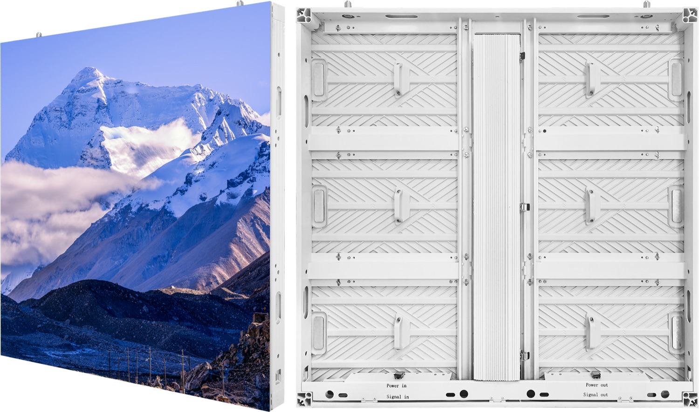
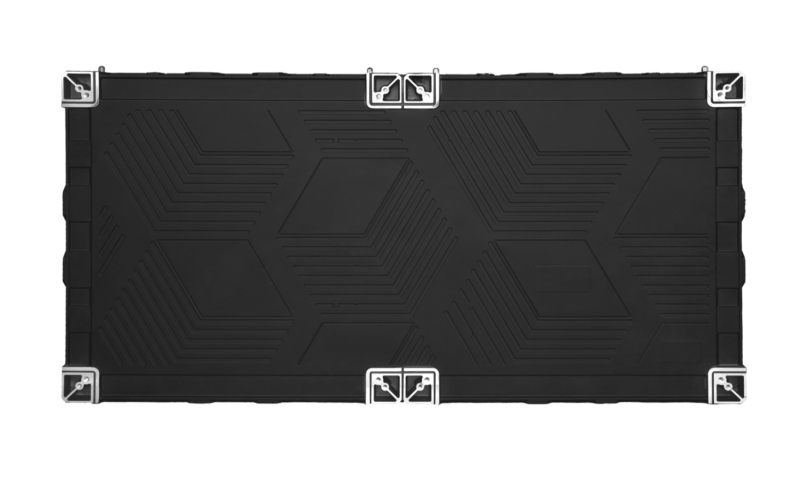

By David
A dvLED site survey should confirm five things before the wall is ordered: that the structure can carry the load, that the power and signal routes exist, that a service route reaches every module, that the viewing geometry suits the specified pitch, and that the finished screen meets the required fire and safety rules. Installing before those are settled is what turns an installation into a change order.
This guide covers what to measure on site and what to confirm in writing before the order is placed.
A dvLED wall is built to the size of the opening, so the dimensions have to be fixed before production starts. If the survey happens after delivery, the wall arrives at a size the site cannot accept and the schedule resets.
The same applies to the electrical design and the structural fixings. These are not installation details; they are order inputs.
Structure. Identify what carries the wall and how load reaches it. Cabinet weight plus mounting steel is the starting figure, and the structure has to take it in the configuration it will actually be in.
Power and signal. Confirm the route, the available capacity and the breaker arrangement. A screen that trips a breaker on a full white image is a sizing failure, not a product fault.
Service access. Walk the route a technician will use to reach a module. If modules are front-serviceable, most access problems disappear. If they are not, the route has to be designed and agreed.
Viewing geometry. Measure the closest and farthest seat and the main viewing angle. These set the pitch. Checking them after the pitch is fixed is the wrong order.
Ambient light. Measure the worst-case light level the screen will face, including sun through glazing. Brightness is specified from that figure with headroom, because LED output declines over time.

| Survey item | What to confirm | Cost if missed |
|---|---|---|
| Structure | Load path and the capacity to carry cabinet weight plus mounting steel | Structural redesign or on-site reinforcement |
| Power and signal | Route, available capacity and breaker arrangement | Breaker trips and re-cabling |
| Service access | A reachable route to every module, front or rear | Corridor closures to change one module |
| Viewing geometry | Closest seat, farthest seat and main viewing angle | Wrong pitch specified and paid for |
| Ambient light | Worst-case light level, including sun through glazing | A screen that looks dim within a few years |
A few conditions appear repeatedly across projects and each one has a design answer.
A wall recessed into a niche needs the cabinet depth plus clearance for airflow confirmed before the opening is built. A wall above a public route needs the fixing method and restraint agreed with the engineer. A wall facing glass can need outdoor-grade brightness even though it sits indoors, because sunlight reaches it through the facade for part of the day.
Outdoor surfaces add their own set: ingress protection, wind loading and the thermal behaviour of the enclosure.
The installer needs dimensions, weights, power figures and the mounting detail. Those arrive with the cut sheet and the dimensioned drawings, and they should be requested at the point of order.
Our indoor and rental cabinets are standardised at 500 × 500 mm, which simplifies the structural design and keeps spare parts predictable. Delivery runs on a 15 to 20 working day lead time with a three-year warranty, ISO 9001:2015, and CE, FCC and RoHS certification.
For this requirement our range covers it directly: the COB EF outdoor series the X Series all-platform.
Send your specifications for a detailed LED display price quote with UL/ETL certification.
Request Price Quote Chat on WhatsApp